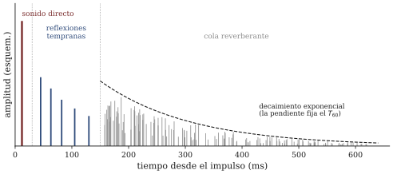

La sala como instrumento
Sesión 14 · Curso Acústica Musical UC Objetivos que cubre: OA1.4 (reflexión, absorción, reverberación y modos de sala; cómo la sala condiciona ejecución y escucha), OA4.3 (medición de T_{60} en salas reales), OA3.2 (sensación–mecanismo– medición en un mismo fenómeno).
¿Por qué la ducha lo hace cantar mejor?
El ticket de la semana pasada preguntaba por qué la misma voz suena tan distinta en la ducha, en la sala de clases y en una catedral. La respuesta corta es incómoda para el ego: no es la voz, es el socio. Todo sonido musical que usted ha oído en su vida llegó a sus oídos a través de una sala (o de una calle, o de un bosque), y ese espacio no es un canal neutro: refleja, absorbe, refuerza unas frecuencias, alarga las notas después de que la fuente calló. Benade (1990, cap. 11) lleva esta idea hasta el fondo: la sala es un sistema vibrante con modos y decaimiento, exactamente como la cuerda de s03 y el resonador de s10 — un instrumento más, que suena junto con el que usted toca. Esta sesión lo trata como tal: primero el mecanismo, después el número, y en el segundo módulo salimos a medirlo en espacios reales de la universidad.
¿Qué hace una pared con el sonido que le llega?
Cuando el frente de presión que estudiamos en s02 choca con una superficie, la energía se reparte: una parte se refleja de vuelta a la sala y otra se absorbe (se convierte en calor dentro del material o lo atraviesa). La proporción depende del material: una losa de hormigón o un vidrio devuelven casi todo; una cortina gruesa, una alfombra, un sofá — y, muy especialmente, un público de veinte personas con ropa — se tragan una fracción grande de lo que les llega. El caso límite es instructivo: una ventana abierta “absorbe” todo, porque nada de lo que sale por ahí regresa. Por definición se le asigna absorción 1, y contra ella se comparan todos los materiales (C&G cap. 14, pp. 525–532).
De esta repartición sale la primera herramienta de diagnóstico: una sala con muchas superficies duras y desnudas es una sala viva (todo rebota), y una sala llena de materiales blandos es una sala seca. Su pieza con cama, ropa y cortinas es seca; la caja de escala de hormigón del mismo edificio es viva. El oído lo detecta en una palmada: en la salida de hoy, ésa será siempre la primera medición — la de oído.
¿A quién le escucho: al instrumento o a la sala?
Párese cerca de alguien que habla y camine alejándose. Al principio domina el campo directo: el sonido que viaja en línea recta de la fuente a su oído, y que se debilita rápido con la distancia (s06). Pero en una sala cerrada hay un segundo inquilino: el campo reverberante, la suma de todas las reflexiones que rebotan una y otra vez, que llena la sala de manera bastante pareja. Lejos de la fuente, ese campo de rebotes domina: por eso en una iglesia el nivel casi no baja cuando usted se aleja del coro, mientras que en una cancha abierta la misma distancia lo deja sin concierto (C&G cap. 14, pp. 532–539; ROE 4.7).
Que oigamos algo inteligible en medio de ese mar de reflexiones tiene su propia explicación perceptual, y es una de las curiosidades finas de la audición: el sistema auditivo le da prioridad al primer frente que llega — el directo — y funde las reflexiones tempranas con él, en vez de oírlas como ecos separados. Es el efecto precedencia (BEN 12.2). Queda como cultura general del curso: sin él, cada sala sería una cámara de ecos inhabitable. La figura 1 ordena a los tres personajes.

¿Cuánto dura una sala? El tiempo de reverberación
Detenga la fuente y la sala sigue sonando: la energía atrapada sigue rebotando y en cada rebote las superficies le cobran su parte, hasta que la cola se funde con el ruido de fondo. Para convertir esa “cola” en un número comparable entre salas se usa el tiempo de reverberación T_{60}: el tiempo que tarda el nivel en caer 60 dB desde que la fuente se detiene. Con la regla de s06 usted puede traducirlo: 60 dB son seis pisos de ×10 — la intensidad cayó a la millonésima parte. Es, en la práctica, el tránsito desde un fortissimo hasta el umbral en que la sala “quedó en silencio”.
Wallace Sabine, ordenando salas de Harvard hacia 1900 con un tubo de órgano y un cronómetro, encontró la relación que todavía usamos (ROS cap. 23; C&G cap. 14, pp. 533–537): el tiempo de reverberación crece con el volumen de la sala y decrece con su absorción total,
T_{60} \propto \frac{V}{A}
donde V es el volumen y A la suma de las superficies pesadas por cuánto absorbe cada una. La lectura en proporciones — nuestro idioma de todo el semestre — es lo que importa: duplicar el volumen (catedral) duplica la cola; duplicar la absorción (llenar la sala de público) la corta a la mitad. Por eso el ensayo general en sala vacía “suena a otra sala” que el concierto con público: es otra sala, con otra A.
Recuadro (el número, para quien lo quiera). Con V en m³ y A en m² de “ventana abierta equivalente”, la fórmula de Sabine es T_{60} = 0{,}161\,\frac{V}{A} s/m (dato estándar; C&G cap. 14; ROS cap. 23). Una sala de clases de 7 \times 8 \times 3 m (V \approx 170 m³) con A \approx 25 m² da T_{60} \approx 1{,}1 s vacía — y bastante menos con veinte estudiantes adentro. Para referencia: las salas de concierto célebres rondan los 2 s; una pieza amoblada, unas décimas.
¿Por qué la ducha favorece ciertas notas? Los modos de sala
Falta el segundo fenómeno del ticket: la ducha no solo alarga su voz — le afina ciertas notas, que salen solas, gordas y satisfactorias. Eso ya no es reverberación: son modos. El aire encerrado entre dos paredes paralelas separadas una distancia L es una columna vibrante como las de s12, y tiene ondas estacionarias con frecuencias
f = \frac{v\,n}{2L}, \qquad n = 1, 2, 3, \dots
por cada par de paredes enfrentadas (los llamados modos axiales; ROS cap. 25). Una ducha de 2 m de pared a pared tiene su primer modo en 343/(2 \times 2) \approx 86 Hz, y los siguientes en ~171 y ~257 Hz: plena zona de la voz. Cuando su nota cae cerca de una de esas frecuencias, la sala entera resuena con usted — es la curva de resonancia de s10, con la sala como resonador y su voz como excitador. Entre modo y modo, en cambio, la sala responde poco: por eso algunas notas engordan y otras no (figura 2).

¿Y por qué la catedral no hace esto? Sí lo hace — pero sus modos empiezan tan abajo y se apilan tan densamente que en la zona musical hay cientos por cada semitono: ya no se oyen frecuencias favoritas sino una respuesta pareja y una cola larga. La regla general: cuanto más chica la sala, más ralos y audibles sus modos. Las salas pequeñas de ensayo y las salas de control de estudio pelean con sus modos graves toda su vida útil; las salas grandes pelean con la reverberación. La demo de la sesión deja mover L, W y H y barrer un tono para oír exactamente esta transición.
¿Cómo se mide esto con un celular?
El protocolo de la salida es la versión pobre — y honesta — del método profesional: llenar la sala de energía, callarse y cronometrar la caída. Nuestro impulso es un globo reventado o una palmada fuerte; el cronómetro es una app que registra el nivel y estima el tiempo de caída. Tres reglas del oficio que la guía convierte en casillas: se mide tres veces y se reporta la mediana (un impulso es una medición ruidosa); se anota el nivel de fondo antes de medir, porque en un pasillo con gente la cola se funde con el fondo mucho antes de caer 60 dB — se lee la caída inicial y se extrapola, anotándolo; y nunca se comparan dos espacios medidos con impulsos distintos sin decirlo. El número que obtenga con un celular no es de laboratorio, pero para comparar la capilla con el hall — que es lo que pide OA4.3 — es perfectamente competente, igual que en s06: las comparaciones con el mismo aparato valen más que los valores absolutos. La figura 3 muestra la medición completa, con su trampa incluida.

Síntesis
- La sala es un instrumento más: refleja y absorbe según sus materiales, y suena junto con la fuente (BEN 11).
- Cerca de la fuente domina el campo directo; lejos, el reverberante. El efecto precedencia explica por qué no oímos cada reflexión como eco.
- T_{60}: tiempo en que el nivel cae 60 dB (un millón de veces menos intensidad). Sabine: T_{60} \propto V/A — crece con el volumen, cae con la absorción.
- Los modos de sala (f = v\,n/2L por eje) son las frecuencias favoritas del aire encerrado: audibles y ralos en salas chicas (la ducha), densos e indistinguibles en salas grandes (la catedral).
- Medir T_{60} con celular: impulso, caída, tres repeticiones, mediana, fondo anotado. Comparar vale más que el valor absoluto.
Hacia la sesión 15
No queda contenido nuevo: queda el cierre. La próxima semana ustedes son el estímulo de la escucha del día — presentaciones finales del proyecto en ambos módulos, con el instrumento funcionando y el informe entregado al inicio (formato en la pauta del hito 3, publicada hoy, que dice exactamente qué se evalúa); recuerde la regla que gobierna todo el proyecto desde s03: la calidad de la explicación pesa más que el éxito sonoro.
Referencias y lectura complementaria
- Benade, A. H. (1990). Fundamentals of Musical Acoustics, 2.ª ed. Dover — cap. 11 (Room Acoustics I, secs. 11.1–11.10: la sala como sistema de modos, reverberación) y cap. 12, sec. 12.2 (efecto precedencia). El enfoque de esta sesión es el suyo.
- Campbell, M. & Greated, C. (1987). The Musician’s Guide to Acoustics. Oxford UP — cap. 14 (pp. 525–548): absorción, tiempo de reverberación y Sabine, campo directo y reverberante, modos de sala y medidas correctivas.
- Rossing, T. D., Moore, F. R. & Wheeler, P. A. (2002). The Science of Sound, 3.ª ed. — cap. 23 (secs. 23.1–23.14: RT, Sabine, el experimento de Joseph Henry) y cap. 25 (modos axiales de salas pequeñas); ejercicios de Sabine para quien quiera práctica.
- Roederer, J. G. (1997). Acústica y Psicoacústica de la Música. Ricordi — sec. 4.7 (sonido en ambientes cerrados). Lectura alternativa en español.